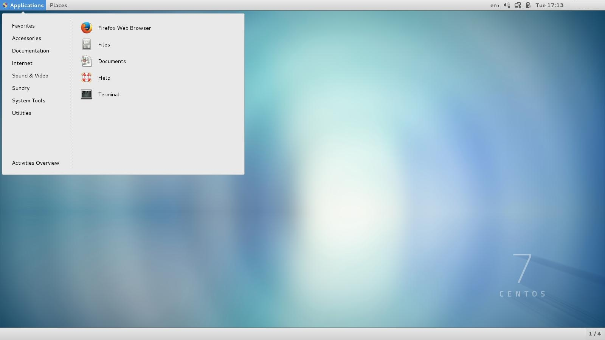

SOFTWARE
O QUE É?
Software é o conjunto de programas ou aplicativos, instruções e regras que permitem o equipamento funcionar.
São os programas que nos permitem realizar atividades específicas num computador. Por exemplo, os programas
como Word, Excel, Power Point, os navegadores, os jogos, os sistemas operacionais, entre outros. Enquanto o
software contribui com as operações, o hardware é a parte física com a qual essas funções podem ser realizadas.
Embora não tenhamos ideia de como as coisas evoluem, essa combinação continuará a funcionar como a base do desenvolvimento tecnológico.
Um software integrado é aquele que está formado por um pacote de aplicações que podem compartilhar dados, ou pelo menos intercomunicar suas informações.
Já um software livre é aquele que dá ampla liberdade aos usuários para estudar, modificar, copiar, adaptar e também melhorar os programas. Isso não quer dizer que são distribuídos de forma gratuita.
SISTEMAS OPERACIONAIS
O QUE É?
Um sistema operacional é o conjunto de softwares mais importante executado em um computador, é ele quem dá a possibilidade de usarmos e dar ordens ao mesmo: ele faz a comunicação entre os componentes de hardware com o software do computador. Sem o sistema operacional, você não teria a plataforma que carrega os programas que possibilitam escrever uma carta, escutar música, navegar na internet ou enviar um e-mail, e o uso do computador torna-se inútil.
São três os sistemas operacionais mais relevantes da atualidade: Windows, Mac OS e Linux.
MICROSOFT WINDOWS
Microsoft Windows é uma popular família de sistemas operacionais criados pela Microsoft, empresa fundada por Bill Gates e Paul Allen. O Windows é um produto comercial, com preços diferenciados para cada uma de suas versões.
Embora haja uma enorme quantidade de cópias ilegais instaladas, ele é o sistema operacional mais usado do mundo. Conhecimentos mínimos desse sistema, do seu funcionamento, da sua história e do seu contexto são indispensáveis, mesmo para os leigos em informática.
Antes da chegada da interface gráfica, o computador era utilizado a partir de comandos de texto. Não havia interatividade com o usuário. Era muito complicado passar comandos para a máquina sem ter bons conhecimentos de linguagem de programação.
Com a chegada da interface gráfica, tudo mudou. O Windows não foi inovador, foi uma cópia de um sistema desenvolvido pela Apple, que, por sua vez, foi uma melhoria do sistema da Xerox. A dupla Steve Jobs e Steve Wozniak criaram o Lisa, sistema operacional baseado na interface gráfica da Xerox.
Steve Jobs ouviu falar da criação rejeitada do mouse (pela empresa Xerox) e foi investigar. Quando chegou na Xerox, os desenvolvedores da interface gráfica entregaram tudo a ele, ensinaram tudo que precisava. Assim Jobs pegou esta nova tecnologia e implantou no Lisa, seu novo computador.
Bill Gates estava, na época, trabalhando para a Apple, e se aproveitando de Steve Jobs, conseguiu exemplares do novo computador, o Lisa. Com isto Bill Gates, que já havia formado uma nova empresa (Microsoft), trabalhou em cima do Lisa, criando o Windows, com algumas melhorias em relação ao sistema de Jobs.
O primeiro Windows era uma junção do sistema operacional MS-DOS com a interface gráfica. A versão NT do Windows foi o primeiro sistema operacional da Microsoft a abandonar o MS-DOS.
A idéia principal da interface gráfica é a de ícones que são manipulados pelo mouse. Quando o Windows foi lançado, tinha ícones iguais aos do Lisa, que ainda não tinha entrado no mercado.
Windows 1
A primeira versão do Windows que chegou ao público foi lançada 1985. O Windows 1 possuía uma interface gráfica em 16-bit e era iniciado através de linhas de comando do MS-DOS.
Comparando-o com os sistemas atuais, o software vinha com pouquíssimas opções de ferramentas, que incluíam um gerenciador de arquivos, Paint, Windows Writer, Bloco de Notas, Calculadora, arquivo de cartões e um relógio para auxiliar em tarefas do cotidiano. Era possível alternar entre os programas disponíveis sem a necessidade de fechá-los.
Além disso, o Windows 1 foi um dos grandes responsáveis pela popularização do mouse, pois trazia uma interface fortemente baseada no uso do acessório. Para que os usuários aprendessem a utilizar o periférico, o sistema contava com um jogo chamado Reversi.
Windows 2
A principal vantagem da segunda versão do sistema em relação a primeira era a possibilidade de sobrepor várias janelas e minimizar e maximizá-las.
Um outro recurso introduzido pelo sistema que está presente até os dias de hoje é o Painel de Controle, que reúne todas as informações referentes à configurações do sistema e facilita a alteração de qualquer preferência. Esta também foi a primeira edição a contar com o famoso processador de texto Word e o software de planilhas eletrônicas Excel.
Windows 3 e 3.1
Este foi o primeiro Windows que exigiu um disco rígido ao invés de disquetes para ser instalado. Lançada em 1990, a terceira versão do sistema registrou a marca de 10 milhões de cópias vendidas em apenas dois anos e foi a primeira a ser considerada uma ameaça ao até então dominante Macintosh da Apple.
O sistema tinha interface com suporte a 256 cores, era multitarefa e possuía design mais atraente e colorido, além de possibilitar a execução de programas MS-DOS de maneira prática e direta. No ano de 1992, foi lançada a atualização do sistema batizada de Windows 3.1. Juntos, os dois sistemas tornaram o Windows o sistema operacional mais usado do mundo.
Windows 95
Como o nome sugere, esta versão do Windows foi lançada em 1995 e trouxe consigo uma das principais marcas do sistema: o Menu Iniciar. Quem também estreou no sistema foi o Internet Explorer, criado pela Microsoft para competir os saudosos e populares Netscape Navigator e NCSA Mosaic.
O Windows 95 apresentava ambiente 32-bits, barra de ferramentas, suporte a múltiplas tarefas e o revolucionário sistema "Plug and Play", no qual o reconhecimento e instalação de periféricos são realizados automaticamente.
Windows 98
O quinto Windows a chegar ao mercado possuia botões de navegação que permitiam avançar ou voltar no Windows Explorer. Além disso, foi ele o principal responsável pela popularização das conexões USB, que dali em diante começou a se tornar padrão no mercado.
Em termos de software, contava com o Internet Explorer 4, Outlook Express, Windows Address Book, Microsoft Chat e o Netshow Player, que foi substituído pelo Windows Media Player em 1999.
Windows 2000
Lançado em fevereiro de 2000, era baseado no sistema orientado para negócios da Microsoft, o Windows NT. Graças a sua estabilidade, acabou se tornando a base para a criação do Windows XP. Com poucas novidades em termos de software e recursos em relação ao Windows 98, foi o primeiro a oferecer suporte à hibernação.
Windows ME (Millenium Edition)
O Windows Millennium Edition foi lançado poucos meses após a chegada do Windows 2000 como uma espécie de comemoração à virada do milênio. Especialistas dizem até hoje que esta é a pior versão do sistema que se tem notícia. Problemas de instabilidade, incompatibilidade de hardware e bugs marcaram o sistema e o assombram até os dias de hoje.
Apesar dos problemas, são dignos de nota os fatos de que foi esta a última versão baseada no MS-DOS e a responsável por introduzir ferramentas de execução de rotinas automatizadas, como a recuperação do sistema. Veio com o Internet Explorer 5.5, Windows Media Player 7 e o editor de vídeos Windows Movie Maker.
Windows XP
A versão mais duradoura do Windows e que conseguiu reunir sistemas operacionais empresariais e pessoais em um só produto foi lançada em 2001. Da mesma forma que o Windows 2000, o XP também era baseado no Windows NT, mas trazia uma interface totalmente repaginada, com o conhecido botão verde do Menu Iniciar e o famoso plano de fundo das colinas.
Foi a primeira versão do Windows a contar com gravação de CD embutida, auto play de discos e outras mídias e ferramentas automatizadas de atualização e recuperação. Além de tudo isso, vinha com o recurso ClearType, que possibilitava uma leitura mais confortável em telas LCD.
O Windows XP foi a mais popular de todas as versões do sistema operacional, mas isso não trouxe apenas vantagens. Graças ao grande número de usuários, o sistema foi (e ainda é) o mais visado pelos hackers, que estão sempre em busca de falhas de segurança para atacar os incautos.
Windows Vista
O sucessor do Windows XP foi lançado em 2007 e trouxe consigo uma grande modificação em termos de design, com a introdução de janelas transparentes (recurso nomeado Aero) e curvas mais sutis.
Apesar de bonito, o Vista não foi bem aceito pelo público por dois motivos principais. O primeiro é a tecnologia "User Account Control", que solicitava permissões para aplicativos em excesso e irritou os usuários. Para completar, os requisitos de funcionamento exigidos pelo sistema nunca condisseram com a realidade e ele nunca rodou de maneira satisfatória, não importando a configuração do computador: era muito mal otimizado.
Windows 7
Lançado em 2009, o Windows 7 teve o claro objetivo de resolver os problemas do Windows Vista e muita gente afirma que o 7 é aquilo que o Vista deveria ter sido. A Microsoft conseguiu implantar melhorias importantes no sistema, que conferiram velocidade e estabilidade sem precedentes. Algumas alterações visuais também foram feitas e os pedidos de autorização foram equilibrados de maneira a não frustrar os usuários.
Além das melhorias, o sistema trouxe o reconhecimento de escrita e o redimensionamento automático de janelas.
Windows 8 e 8.1
O Windows 8, lançado em 2012, representou a mudança mais drástica realizada pela Microsoft em seu sistema operacional em termos de interface. Ele foi todo otimizado para a tecnologia touch e o botão do Menu Iniciar sumiu, sendo acessado apenas apertando a tecla Windows no teclado e executado em tela cheia.
A nova organização em blocos coloridos, botões grandes e widgets que mostravam informações atualizadas em tempo real foi uma tentativa da Microsoft de criar um sistema operacional único, que funcionasse tanto em desktops quanto na interface mobile. A ideia, entretanto, não foi bem aceita.
Um ano mais tarde, em 2013, a empresa liberou o Windows 8.1, que devolveu o botão Iniciar — mas não o menu — e possibilitava a inicialização direta na área de trabalho, tornando a utilização um pouco mais prática em computadores de mesa.
Windows 10

Anunciada em setembro de 2014 e lançada em 2015, a nova versão do Windows representa o retorno do foco da empresa aos desktops, mesmo sem dispensar totalmente a utilização do sistema em dispositivos móveis. O Windows 10 trouxe de volta o Menu Iniciar e é possível alternar entre um modo tradicional de trabalho - para usuários de PCs tradicionais - e outro para tablets e computadores híbridos compatíveis com telas sensíveis ao toque.
É importante lembrar que o objetivo do Windows 10 é unificar a plataforma em todos os tipos de dispositivos, apesar do enfoque especial nos desktops. Existem aplicativos para o sistema operacional que são multi-dispositivo, baixados na Windows Store.
Com a baixíssima aceitação do Windows 8 — muitos usuários ainda permanecem utilizando o Windows 7 e até o XP —, a Microsoft percebeu que era necessário manter seu público cativo de usuários de PCs tradicionais e isso só poderia ser feito se as tentativas de unificação de sistema forem pensadas também para esses dispositivos e para manter a praticidade na utilização do teclado e do mouse.
O novo Windows tem a finalidade de conquistar (e reconquistar) os usuários de todas as plataformas, compensando a rejeição da última versão e se tornando para o 8 o que o 7 foi para o Vista. Tanto que por alguns meses após o lançamento da versão foi possível fazer o download e instalação do SO gratuitamente, independente se a versão que o usuário usasse antes fosse original ou ilegal. Essa atitude fez com que uma parcela da pirataria do sistema operacional acabasse, além de (re)conquistar muitos usuários do computador pessoal.
A interface, apesar de muito parecida com os Windows 8 e 8.1, teve algumas mudanças, como a atualização da assistente virtual Cortana e alguns ícones.
APPLE MacOS
A Apple é uma das maiores empresas de equipamentos eletrônicos e softwares do mundo, foi fundada em 1976, tendo como seus fundadores os estudantes Steve Jobs e Steve Wozniak. Tudo começou com o Apple I, criado por Wozniak nas horas vagas. Os amigos decidiram tentar vender o projeto para as empresas HP e Atari, porém ambas negaram, dizendo que computadores pessoais não teriam futuro no mercado.
Vista a descrença de grandes empresas em seu trabalho, a dupla decidiu produzir os computadores com seus próprios recursos e vender por conta própria. Os lucros destas vendas sustentaram a Apple por mais um ano, e permitiram o desenvolvimento de máquinas mais potentes. O próximo a ser lançado foi o Apple II, que fez muito sucesso. Diferente de outros computadores, o Apple II carregava o BASIC ( programa para programação da época) na própria memória, que totalizava 16 KB. De espaço disponível (4 KB para o Basic, e o restante para os dados dos programas).
Enquanto continuava na linha do Apple II, a empresa começou a trabalhar na interface gráfica, que já havia sido desenvolvida anteriormente pela Xerox. Na época, A Microsoft estava trabalhando para a Apple, e Bill Gates conseguiu exemplares do Lisa (Primeiro computador com interface gráfica a ser lançado no mercado). Pouco antes do lançamento do Lisa, Bill Gates lançou o Windows, utilizando a mesma interface do Lisa, porem com algumas funções modificadas. O Lisa não fez muito sucesso, chegando a deixar a Apple no vermelho, porém serviu de Base para o Macintosh, que fez muito mais sucesso. O Sistema operacional dele, MacOS, era o melhor da época, usando muito menos memória.
A Apple passou a fabricar outros aparelhos eletrônicos a partir de então, como o iPhone, iPad, iPod, e outros aparelhos. O sistema operacional da Apple, o Mac, não roda em outros computadores, somente nos da Apple. Algumas versões mais antigas rodam por uso de alguns truques e emuladores, mas o desempenho total do sistema só se atinge com um computador da Apple.
Os computadores da Apple são muito bons para designer gráfico, e ótimos para rodar programas como Photoshop e Dreamweaver. Estes computadores são muito usados em cursos como engenharia, engenharia industrial, moda, e outros que precisam de programas deste porte. Um grande problema para quem quer adquirir um MAC é a compatibilidade de alguns programas, que só rodam no Windows, além do preço absurdamente salgado.
Apple DOS e SOS

Os primeiros computadores fabricados pela empresa nasceram na década de 70 em uma pequena garagem em Palo Alto, na casa dos pais adotivos de Steve Jobs. Chamados de Apple I e Apple II, eles ainda não tinham um sistema próprio definido, utilizando-se de soluções disponíveis no mercado como, por exemplo, o "DOS", ainda em um estágio bastante primitivo.
Apenas no Apple III, um sistema próprio foi incluído nas máquinas, recebendo o nome de “Apple SOS”, sigla para “Sophisticated Operating System” — que de início representava uma versão curta de "Sarah's Operating System", homenagem feita à filha de Wendell Sanders, um dos engenheiros da equipe.
Lisa OS
Em 1983 nascia o computador Apple LISA, que ao mesmo tempo em que recebeu esse nome em homenagem à primeira filha de Steve Jobs, também era uma abreviatura de “Local Integrated System Architecture”, vindo equipado com a plataforma “Lisa OS”.
Ele foi o primeiro computador fabricado pela Apple a ter uma interface gráfica, ainda que muito limitada. Naquela época, a companhia já estava começando a investir pesado em publicidade, o que resultou na criação do primeiro comercial de Mac do mundo. Infelizmente, devido a seu preço caro e baixa confiabilidade, o produto acabou não fazendo muito sucesso.
System OS 1.0 - 7.0
O primeiro “Apple Macintosh”, apresentado em janeiro de 1984, trazia pré-instalado a versão 1.0 de um novo sistema operacional batizado de “System OS”. A plataforma contava com vários recursos voltados para produtividade e chegou a receber várias atualizações nos anos subsequentes, sendo levado até a versão 7.0
System OS 7.1.1 Pro
Nessa época, em 1993, finalmente começamos a ver os primeiros computadores com tela colorida chegando ao mercado; O System 7.1.1 Pro foi o pioneiro a adotar a o sufixo “Pro” em sua nomenclatura.
Nele vemos uma implementação muito primitiva do “Dock” como conhecemos atualmente, com atalhos para aplicativos sendo posicionados em uma barra inferior. As nova linha de máquinas com esse sistema já contava com processadores PowerPC, abandonando a antiga linha de chips 680x0 da Motorola.
Mac OS System 7.5.1
Em 1995 vemos a primeira implementação da nomenclatura que durará pela próxima década, o “Mac OS”. A escolha do nome foi feita com intuito de diferenciar os equipamentos e o sistema da Apple dos diversos “clones” que eram lançados no mercado.
Mac OS 7.6 - Mac OS 9.0
A partir do Mac OS 7.6 (lançado no ano de 1997) a Apple cortou o nome "System" de sua plataforma para diferenciar os novos modelos de Mac dos antigos, deixando apenas o Mac OS.
Com codinome "Harmony", ele foi a última grande atualização disponibilizada para o sistema "7". Nessa época, diversos usuários já possuíam conectividade à internet, e provedoras como a AOL predominavam no mercado.
Essa versão manteve basicamente as mesmas características até o Mac OS 9.0, lançado em 1999. A última atualização, que levava a plataforma 9.2.2 foi enviada em 23 de Outubro daquele mesmo ano.
Mac OS X Kodiak Public Beta
Essa versão foi literalmente um divisor de águas para o macOS; a partir daqui o sistema ganhou uma cara completamente diferente, incluindo recursos como o Dock, que até hoje ainda perduram nas versões presentes. O Mac OS X Kodiak adotava um design mais chapado, sem muitos ícones 3D, trazendo um pouco das versões do Mac OS lançadas após o 7.
As sombras nos menus e janelas do sistema eram extremamente pesadas, os botões finalmente começavam a abraçar o novo conceito a ser implementado na plataforma em sua próxima versão, o “Aqua”, que trazia elementos translúcidos. Aqui vemos uma versão muito simplificada do "iTunes", que sequer tinha ganhado essa nomenclatura ainda, sendo chamado apenas de “Music Player”.
Mac OS X 10.0 "Cheetah" e 10.1 "Puma"
A primeira plataforma multilíngue da Apple chegou ao mercado no dia 14 de março de 2001, e pegou emprestado diversos elementos do OS X Kodiak Beta, e os incrementou. O Mac OS X 10.0 recebeu o codinome interno de "Cheetah", apesar de não ser abertamente chamado desse nome, e sim referido simplesmente como "Mac OS X".
Devido aos diversos problemas envolvendo lentidão, falta de estabilidade, ausência de suporte à playback de DVD ou gravação de CD dentre vários outros, a Apple ofereceu à partir do dia 25 de setembro de 2001 o Mac OS X 10.1 “Puma” como uma atualização gratuita para os usuários dessa plataforma.
Mac OS X 10.2 "Jaguar" - 10.7 "Lion"
A versão “Jaguar” do Mac OS X chegou ao mercado em 23 de agosto de 2002, e foi uma das primeiras a oferecer “pacotes família”, para aqueles usuários que possuíam mais de um Mac em casa. O sistema ainda reteve muito do OS X 10.1, mas agora, ele trazia à bordo menus e interface mais simplificados (com um pouco menos de detalhes e texturas) e é claro, o diferencial ficava pela presença da primeira versão do iTunes (1.1.1).
A partir deste, os nomes de felinos começaram a ser implementados de forma oficial na nomenclatura da plataforma. Logo após o Jaguar, tivemos o Panther (10.3), Tiger (10.4), Leopard (10.5), Snow Leopard (10.6), Lion (10.7).
No Mac OS X 10.5 "Leopard" o sistema ganhou uma cara completamente nova, implementando barra de menu translúcida e outras 300 mudanças em relação a seus predecessores, inclusive a adição do recurso de backups automáticos chamado "Time Machine".
OS X 10.8 "Mountain Lion"
Essa versão foi outro divisor de águas para os Macs, pois foi à partir dela que o nome "Mac OS" foi oficialmente aposentado, passando a ser chamado apenas de "OS X".
Lançado em 25 de julho de 2012, esse sistema trouxe muito mais do que apenas uma mudança de nome: ele foi o primeiro a ser oferecido de forma totalmente digital, através de um download pago (US$19.99) na Mac App Store. Recursos como o Game Center, iCloud, Gatekeeper (bloqueador de malwares) deram as caras pela primeira vez nos Mac. O aplicativo iChat foi substituído pelo ”iMessage”, que mais tarde, viria a se chamar “Mensagens” nas versões subsequentes.
O OS X 10.8 Mountain Lion foi o primeiro a trazer recursos do iOS como, por exemplo, o Centro de Notificações e integração direta com as redes sociais Twitter e Facebook, que só foram implementadas no sistema alguns meses após o lançamento, através da liberação de um patch de atualização.
OS X 10.9 "Mavericks"
A essa altura, os nomes de felinos já estavam ficando escassos, por isso, a Apple decidiu inovar, abandonando os gatinhos e adotando nomes de lugares, algo que podemos conferir até na versão recém-lançada da plataforma.
Ele foi anunciado em 10 de Junho de 2013 durante a WWDC, e foi disponibilizado como um upgrade gratuito, marcando também o início de uma nova era de atualizações sem custo algum para os clientes da maçã. Mais aplicativos do iOS como, por exemplo, o iBooks e o Mapas foram implementados na plataforma, aproximando cada vez mais a versão móvel da de Desktop.
OS X 10.10 "Yosemite"
Anunciado dia 2 de junho de 2014, o OS X Yosemite chegou ao mercado trazendo um design bem mais chapado, com ainda mais elementos translúcidos e também um Dock com efeito de "vidro fosco", abandonando o antigo estilo 3D e empregando um design 2D, porém, bastante sofisticado. Essa versão foi onde as plataformas iOS e OS X finalmente começaram a andar de mãos dadas no quesito software, graças à implementação do recurso “Continuidade”, que permitia que usuários rodando o iOS pudessem compartilhar informações como mensagens, e-mails, sites, dentre vários outros com seu Mac.
Foi aqui que vimos a Apple descartar seus aplicativos iPhoto e Aperture em prol do novo “Fotos”, que foi lançado como um aplicativo nativo ao sistema na versão 10.10.3, com integração total no iCloud. Outra novidade é que a partir dessa versão a Apple deu início ao programa de testes público (Apple Beta Software Program), que permitiria a usuários testarem versões de suas plataformas ainda não lançadas ao público, tanto no OS X quanto no iOS. Há também uma introdução primitiva a um modo noturno, que escurece apenas o Dock, a barra de menu e menus suspensos.
OS X 10.11 "El Capitan"
O El Capitan não trouxe muitas mudanças visuais — com exceção da mudança da fonte do sistema de Helvetica Neue para San Francisco — em relação ao OS X Yosemite. Aqui as novidades mais interessantes ficaram “nos bastidores”, focando-se em estabilidade, segurança e desempenho.
O sistema foi apresentado ao mundo dia 8 de junho de 2015, chegando às mãos dos usuários domésticos apenas dia 30 de setembro de 2015. O refinamento nos aplicativos prometia melhoras de até 40% na velocidade de abertura dos mesmos.
macOS 10.12 "Sierra"
O macOS 10.12 "Sierra" foi anunciado na WWDC de 2016. O sistema trouxe novidades relacionadas ao recurso de "Continuidade", agora ainda mais capaz do que antes, contando com uma "área de transferência universal" que permite que conteúdos copiados em um iPhone ou ou iPad possam ser colados no Mac. Ele também acrescentou pela primeira vez a assistente virtual Siri ao Mac, unificando ainda mais a experiência de uso entre a plataforma móvel iOS e a de Desktop.
Outro recurso que merece destaque na plataforma é o Auto-unlock, que dispensa usuários de ter que digitar a senha para desbloquear seu Mac quando usando um Apple Watch com watchOS 3.
macOS 10.13 "High Sierra"
Esta versão do sistema operacional foi anunciada em 5 de junho de 2017 na WWDC e lançada em 25 de setembro do mesmo ano.
Assim como a versão "Mountain Lion", sucessor da "Lion", o nome "High Sierra" faz alusão a um refinamento de seu antecesor "Sierra", focado em melhorias de performance e atualizações técnicas ao invés de ferramentas de usuário. Entre as mudanças mais notáveis de aplicativos estão o Fotos e o navegador Safari.
macOS 10.14 "Mojave"
A atualização de sistema foi anunciada na WWDC em 4 de junho de 2018, e lançada para o público no dia 24 de setembro de 2018. Ela traz vários aplicativos do iOS para o desktop, incluindo o Apple News (Notícias) Voice Memos e Home.
Ela inclui uma opção de interface noturna mais completa que à apresentada no "Yosemite". Aplicativos da Apple, como Mail, Mapas, Agenda e Fotos já incluem a versão noturna, e desenvolvedores podem incrementar esta interface noturna em seus aplicativos. Vale citar, também, que está é a ultima versão que suporta aplicativos com base 32-bit.
LINUX
A história do Linux começa no ano de 1991, pelas mãos de um estudante universitário finlandês chamado Linus Torvalds. O Linux foi criado por ele, não totalmente do "zero", mas sim como uma variação do Minix: um sistema operacional simples, criado por Andrew S. Tanenbaum, um renomado professor de computação que é conhecido pelos diversos livros que escreveu para a área.
Tanenbaum disponibilizou o Minix principalmente para servir de auxílio no ensino de computação. Trata-se de um sistema operacional simples, que exige poucos recursos de hardware e cuja primeira versão foi lançada em 1987.
Dadas as suas finalidades acadêmicas, não só o Minix foi disponibilizado de maneira gratuita e livre, como também o seu código-fonte completo. Assim, os estudantes de computação podiam — e podem — estudá-lo inteiramente para desenvolver habilidades ou mesmo para criar projetos derivados. Foi assim que Linus Torvalds entrou nessa história.
O Minix também não foi escrito do "zero". Trata-se, na verdade, de um projeto baseado em um sistema operacional que tem grande participação na história da computação: o Unix. Este começou em meados dos anos 1960 como um projeto a ser desenvolvido por um grupo de habilidosos programadores, entre eles, Ken Thompson e Dennis Ritchie: um sistema operacional de nome Multics. O Multics era um projeto ambicioso, mas enfrentou vários problemas, entre eles, falta de recursos computacionais. Assim, no mesmo ano, Ken Thompson decidiu criar algo mais "realista", chamando o novo projeto de Unics. Tempos depois, o nome foi mudado para Unix, denominação que permanece até hoje.
Apesar de haver outros programadores envolvidos com a criação do Unix, Ken Thompson e Dennis Ritchie são os nomes mais lembrados porque ambos, em 1973, praticamente reescreveram o Unix a partir da linguagem C (uma criação do próprio Dennis Ritchie). Por causa de seus recursos, a linguagem passou a ser utilizada em vários outros projetos mais complexos, inclusive no desenvolvimento de outros sistemas operacionais, fazendo o seu criador ser reconhecido mundialmente como um dos grandes nomes da computação.
Linus Torvalds, então com quase 20 anos, começou a estudar ciência da computação na Universidade de Helsinki, na Finlândia, em 1988. Cerca de dois anos depois, aproveitando o conhecimento que tinha e estava adquirindo sobre a linguagem C, decidiu criar a sua própria implementação de um terminal em seu recém obtido computador 80386, principalmente para acessar o servidor Unix da instituição de ensino. Isso porque ele já havia testado o Minix para essa finalidade, mas não estava satisfeito com os seus recursos. Em 1991, Linus Torvalds decidiu divulgar abertamente o projeto. Para isso, publicou mensagens na Usenet (uma espécie de antecessora da internet baseada em troca de mensagens) pedindo sugestões e colaborações para a sua iniciativa.
O início da trajetória do Linux não foi isenta de problemas. Um dos obstáculos que Torvalds teve que enfrentar foram as críticas do professor Andrew S. Tanenbaum, que em suas declarações afirmou que o "Linux é obsoleto", especialmente por ter "design monolítico". Linus respondeu às críticas e continuou seu trabalho, contando com o apoio de cada vez mais pessoas. Com o passar do tempo, o Linux acabou inclusive sendo portado para várias outras plataformas, o que certamente contribuiu para o seu sucesso.
O desenvolvimento do Linux é um dos exemplos mais proeminentes de colaboração de software livre e de código aberto. O código fonte pode ser usado, modificado e distribuído - com fins comercias ou não - por qualquer um, respeitando as licenças, como a GNU General Public License versão 2, devolvendo o código desenvolvido de volta para o desenvolvimento do núcleo.
Ubuntu
O Ubuntu é sem dúvida nenhuma, a distribuição linux mais usada e também a que maior influencia devido ao fato de ser uma das distribuições mais amigáveis e mais fáceis de instalar, usar e também de ser a distribuição mais fácil de se instalar programas e de se obter ajuda para resolver problemas.
Mint

O Linux Mint é uma das distribuições Linux preferidas dos usuários iniciantes no Linux e também é considerada um das distribuições mais fáceis de usar.
O Linux Mint está em primeiro lugar de acordo com o ranking do Distrowatch(estar em primeiro no ranking do distrowatch não quer dizer que seja a distribuição mais usada) mas é possível que caia um pouco por causa da perda de credibilidade que a distribuição teve após uma invasão do site e a troca das ISOs da distribuição.
Debian
Debian é uma das distribuições mais estáveis e muitas distribuições linux tem o Debian como base.
No Debian, cada pacote para por inúmeros testes até ser considerado estável.
Algumas pessoas que estão começando a usar podem considerar Debian uma distribuição complexa demais para iniciantes.
Fedora
Apesar de não ser tão fácil de usar quanto as distribuições Ubuntu e Mint, é uma distribuição relativamente fácil de usar mas os iniciantes podem ter um pouco de dificuldade.
De qualquer forma é uma ótima distribuição, e, além disso, é patrocinada pela Red Hat.
Red Hat Enterprise Linux
É uma distribuição Linux comercial voltada para empresas e é muito usada em servidores e em datacenters.
CentOS

É construída usando o mesmo código do Red Hat Enterprise Linux mas é gratuita, não possui os logotipos oficiais da Red Hat e também não possui suporte da empresa. Fora isso, o sistema é idêntico ao Red Hat Enterprise Linux.
Pelo Linux ser um open-source e sua ideia, apesar do uso comercial permitido, é ser gratuito, há algumas versões cópias daquelas pagas distrubuidas gratuitamente como um ato de "protesto".
Slackware
Criada em 1993 por Patrick Volkerding, Slackware é a mais antiga distribuição Linux ainda em atividade. O Foco dessa distribuição é simplicidade e estabilidade, e seu objetivo é manter-se fiel ao padrão UNIX.
Há diversas versões de Linux pela internet, mas o VOID considera essas as principais e mais relevantes para o conhecimento.
BIOS
O QUE É?
Basic Input Output System (Sistema Básico de Entrada de Saída). É a interface principal entre os hardware e o sistema operacional, responsável por iniciar o computador. Suas configurações estão armazenadas em memória ROM. Cada placa mãe possui um modelo de BIOS, mas todos com as mesmas
características.
O SETUP é o programa responsável pelas configurações de alguns hardwares conectados à sua placa mãe. É também responsável pelo desempenho do computador, podendo deixá-lo mais
rápido ou mais lento. Pode-se alterar configurações de inicialização do disco rígido, processador, memória, USB (Universal Serial Bus) e outros.
Para ter acesso ao SETUP, deve-se apertar alguma tecla (cuja depende da fabricante) enquanto no POST (Power-On Self-Test — ou Auto-teste de Inicialização), que geralmente aparece em algum lugar da tela enquanto no POST.
SISTEMA DE ARQUIVOS
O QUE É?
O sistema de arquivos funciona como intermediário entre o disco rígido e os arquivos armazenados no mesmo. O HD não consegue, por si só, organizar os dados em seu espaço,
e pra isso temos o sistema de arquivos, que dita as regras de organização no disco rígido.
Por exemplo, o FAT32 possui uma organização totalmente diferente do NTFS. Além disso,
um filesystem também diz como os arquivos são acessados no disco, quais usuários possuem permissão para lerem ou alterá-los no computador. Assim, um mesmo documento pode ser
armazenado de forma diferente no disco, dependendo do uso do NTFS ou do FAT32.
Como curiosidade, outros sistemas operacionais, como o Linux, possuem
sistemas de arquivos totalmente diferentes do NTFS e FAT32, como EXT2, EXT3 e
ReiserFS, mas que não são usados pelo Windows.
FAT32
O Sistema de arquivos FAT32 é basicamente uma evolução do FAT convencional ( também conhecido como FAT16). A sua primeira versão foi desenvolvida no ano de 1980, para atender às necessidades daquela época. No início, ele trabalhava somente com 12 bits de endereçamento, valor que passou para 16 em 1987. Finalmente, no ano de 1996 passou a usar os 32 bits, versão que é utilizada até hoje. FAT (sigla de File Allocation Table – Tabela de Alocação de Arquivos) foi criado para ser o filesystem oficial do MS-DOS, e continuou sendo até o fim do uso deste sistema. Contudo, as principais versões do Windows na década de 90 manteram o DOS como núcleo do sistema, sendo que toda a parte visual era como se fosse uma interface gráfica para o terminal de comandos. Entre os sistemas que utilizavam essa configuração, podemos citar o Windows 3.0, 95, 98 e ME. Somente os dois últimos trabalham com o FAT de 32 bits.
NTFS
Por outro lado, o NTFS (sigla de NT Filesystem – Sistema de Arquivo NT) foi desenvolvido no ano de 1993, com o objetivo de ser o filesystem oficial do Windows NT. Na verdade, a sua criação foi uma necessidade, pois os sistemas baseados em MS-DOS não eram suficientemente estáveis para a execução em servidores. Nesse caso, a solução foi a implementação de um núcleo totalmente novo, chamado de NT (New Tecnology – Nova Tecnologia). Como o NT foi criado em 1993, 13 anos depois do DOS, as especificações do FAT, ditadas em 1980, já estavam obsoletas para a época. Daí houve a necessidade da criação do NTFS. Como será possível observar no discorrer deste artigo, o NTFS possui muitos avanços em relação ao FAT, além de alguns recursos novos, como a encriptação e atribuição de permissões aos arquivos. No começo na década de 2000, com o Windows ME, foi constatado que o uso do DOS como núcleo não era mais eficiente, por isso, os SO domésticos também passaram a usar o padrão NT. No ano 2000, foi lançado o NTFS 5, que é a versão deste filesystem que usamos até hoje. Entre os sistemas nativos com ele, podemos citar o Windows 2000, XP e Vista.